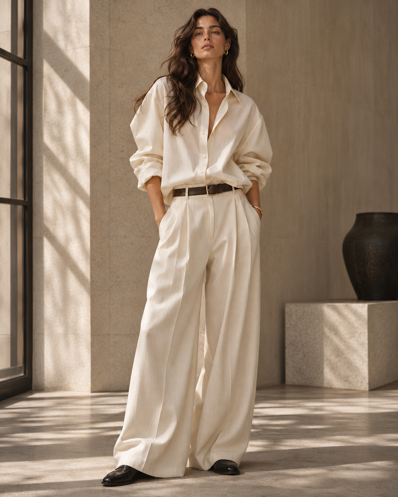
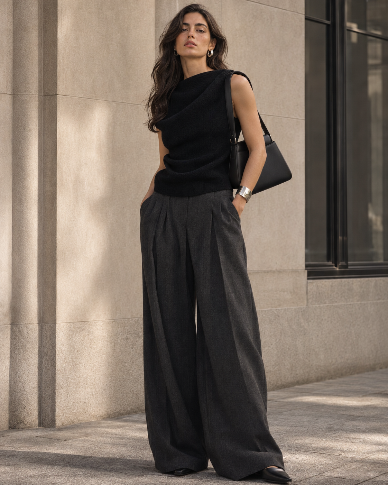
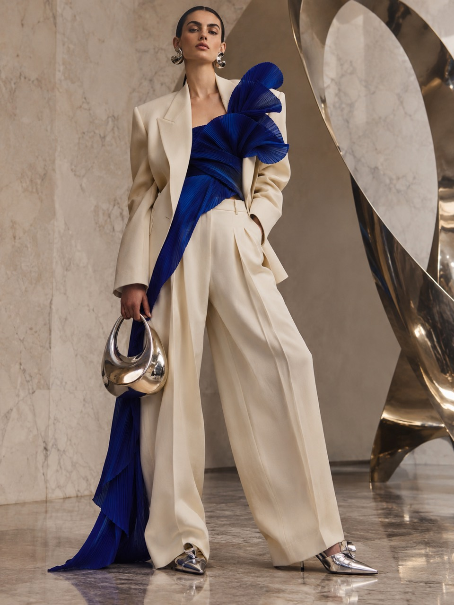
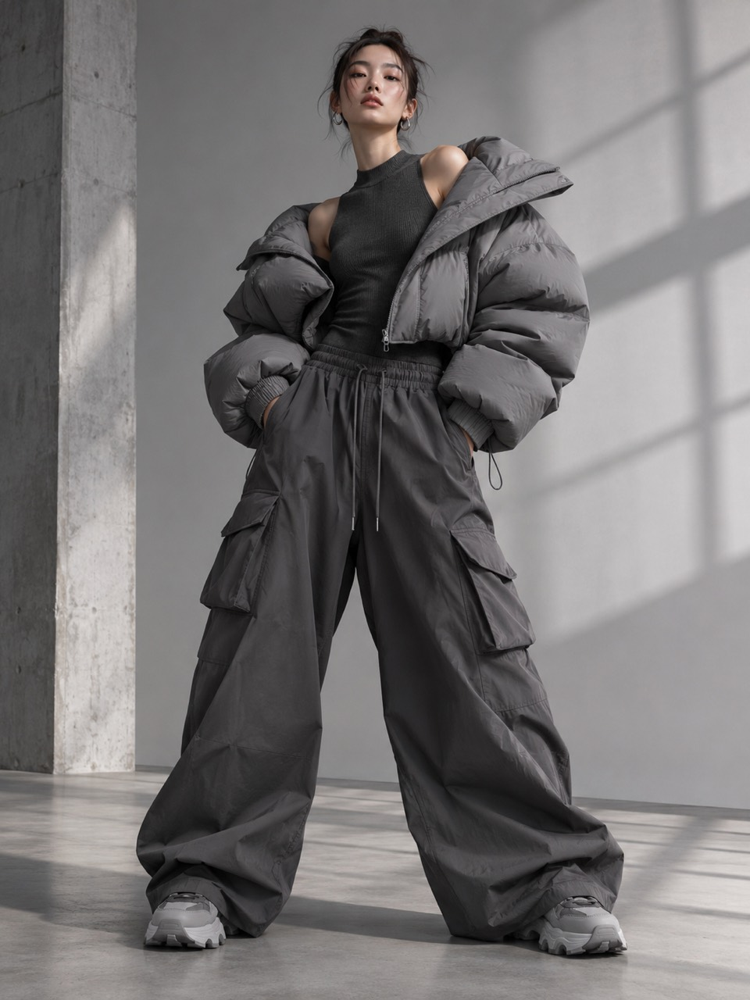
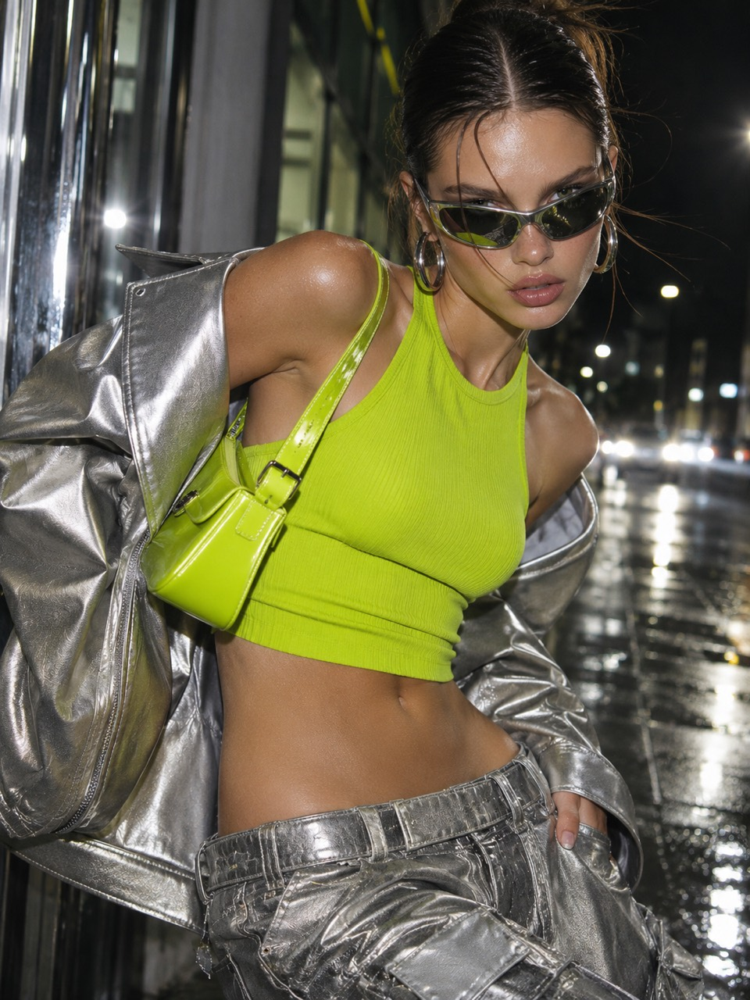
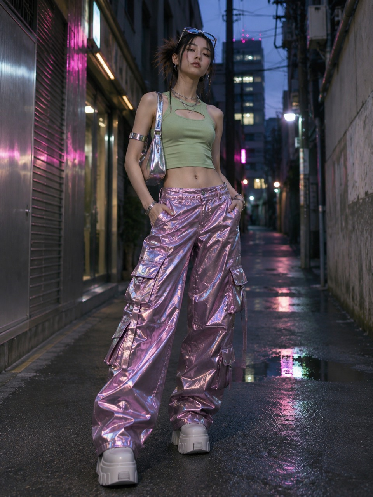
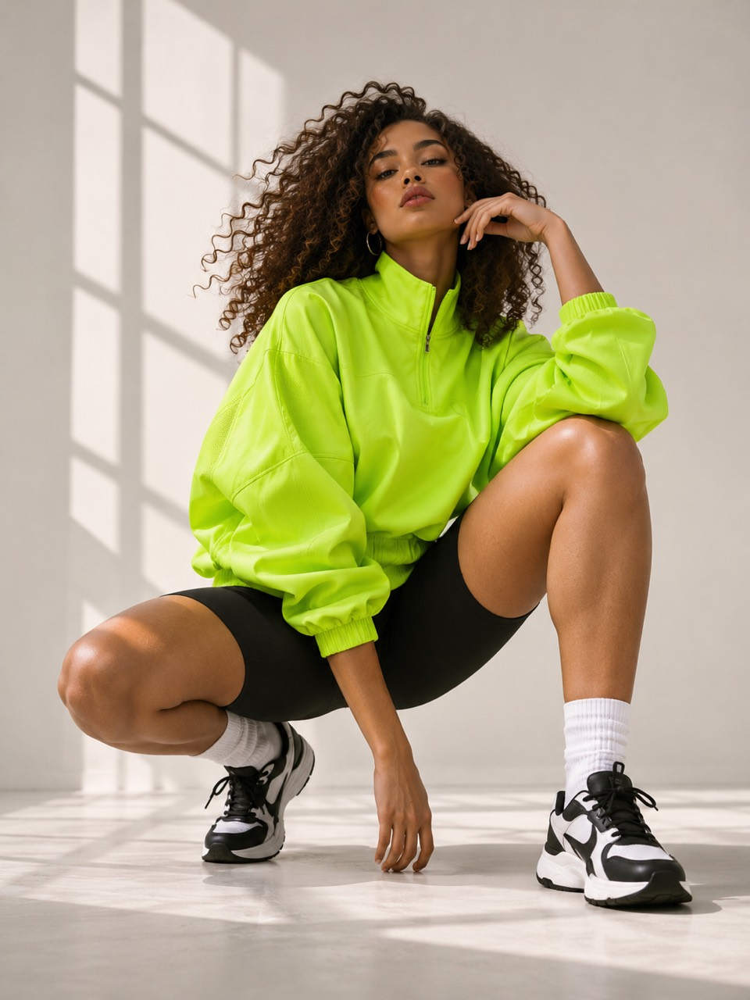
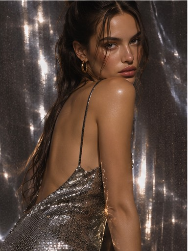

Тёплый свет
Шерсть / кожа / свет
FASHION EDIT / SELECTED LOOKS
От спокойного монохрома до неонового города. Одежда, силуэты и настроение в одной визуальной подборке.
10 образовFashion-подборка
Нажмите на изображение, чтобы рассмотретьШерсть / кожа / свет

Лёгкость / дневной свет

Графит / архитектура

Молочный цвет / кобальт

Монохром / городской силуэт

Лайм / трикотаж

Свет / отражения / детали

Металлик / ночной свет

Спорт / солнечный свет

Пайетки / свет / настроение
Подборка визуальных образов и стилистических направлений.
ОБСУДИМ ВАШ ПРОЕКТ
Коллекция, отдельный образ или серия визуалов. Начнём с одежды и настроения, которое вы хотите передать.
Обсудить fashion-визуал Telegram: @olyakutsenkoПозвонить: +7 915 239-79-45